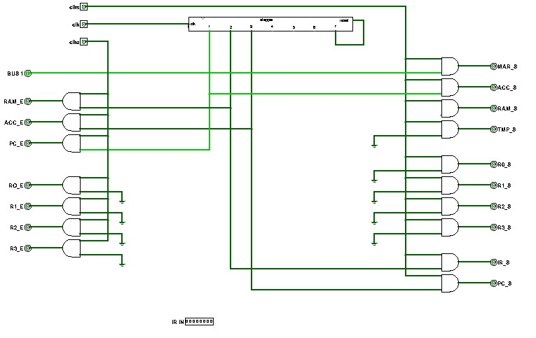

From Bits to Lines: the Control Unit
Sections 11.9 – 11.12 | Estimated time: ~1.25 hours
11.9 Enables down the left, sets down the right
You now have a clock that says which quarter and a stepper that says which step. The control unit adds the third thing — which instruction — and from the three of them produces every control line your Week 10 core needs. Its inputs are clk, clk_e and clk_s from the clock, and the 8-bit instruction ir. Its outputs are the eleven control pins you clicked by hand in Checkpoint 4.
![A Logisim circuit with a long stepper block across the top, its clk input fed from an input pin clk and its output 7 wired back to its reset. Input pins clks and clke are at the top left. Down the left edge, a column of two-input AND gates drives output pins RAM_E, ACC_E, PC_E and R0_E to R3_E; one input of every one of these gates is a common vertical wire from clke. Down the right edge, a second column of AND gates drives output pins MAR_S, ACC_S, RAM_S, TMP_S, R0_S to R3_S, IR_S and PC_S; one input of every one of these is a common wire from clks. An output BUS 1 sits on the left. An 8-bit input IR IN is at the bottom. The middle of the circuit is empty.](images/Control_Unit_Template_Circuit.jpg)
clke; every set on the right is ANDed with clks. His version selects R0–R3 inside the control unit; yours keeps the REG_SELECT you built in Week 10 on the CPU tab, so your control unit outputs rega_e, regb_e and regb_s instead of eight register lines.Those two columns of AND gates are the whole reason page 1 exists. Whatever the middle of the control unit decides, an enable can only be high while clk_e is, and a set only while clk_s is. Every transfer your CPU ever makes has the shape of §11.2, without the logic in the middle having to know anything about quarters. The middle decides what; the clock decides when.
11.10 Decoding a class
Week 10 showed that every field of an instruction byte is a wire to something you built. The control unit is where the remaining wires go. First it needs a line for each class of instruction, high when ir holds an instruction of that class:
- ALU. Bit 7. That is all:
b7is the ALU line. - Everything else. Bits 6–4 go into the
DECODER_3TO8you built in Week 3, and each of its eight outputs is ANDed with NOTb7, so that an ALU instruction raises none of them.
| b6 b5 b4 | Decoder output | Class line (with b7 = 0) | Used |
|---|---|---|---|
| 000 | out0 | LD | Week 14 |
| 001 | out1 | ST | Week 14 |
| 010 | out2 | DATA | Week 14 |
| 011 | out3 | JMPR | Week 14 |
| 100 | out4 | JMP | Week 14 |
| 101 | out5 | Jcaez | Week 14 |
| 110 | out6 | CLF | this week |
| 111 | out7 | I/O | Week 12 |
Build all eight AND gates now and wire only CLF. The other seven lines are ready for Weeks 12 to 14, and building the bank once means the decoding never has to be revisited. This is the course’s rule for control, in action: a decoder selects — each output is a line with one meaning.
One more line: CMP, which is b6 AND b5 AND b4 — opcode 111 — and is only ever used together with the ALU line. A compare runs steps 4 and 5 like any ALU instruction, then must not write a register in step 6. So the CMP line is inverted and ANDed into step 6’s gate.
11.11 The control table
Now every control line can be written as a sentence: high at step N, when the instruction is of class X, during the right quarter. Here is the whole of this week’s control unit as a table, produced from the same model that runs the widget below:
| Line | ANDed with | High at | What it does |
|---|---|---|---|
| Loading the table… | |||
Each row is gates you can read straight off it. regb_e is one 3-input AND: step4, the ALU line, clk_e. flags_s has two terms, so it is two ANDs feeding an OR, and the OR’s output is ANDed with clk_s. Every line in a hardwired control unit is an OR of AND terms. Page 4 shows that this is not a coincidence of this CPU but what “hardwired” means.
Three more outputs complete the control unit:
raandrbareir’s bits 3–2 and 1–0, wired straight through to REG_SELECT. They need no gating: REG_SELECT only acts on them whenrega_e,regb_eorregb_sis high.opcodeisir’s bits 6–4, each ANDed with (step5AND the ALU line). At every other moment the ALU sees000and adds. That matters twice: CLF, below, needs an addition at step 4; and in Week 13, fetch will use the ALU to add 1 to the program counter at step 1, whileirstill holds the previous instruction. Without the gating, a fetch after an XOR would XOR the program counter.
![A Logisim control-unit circuit. A stepper block runs across the top with output 7 wired back to its reset. Outputs 4, 5 and 6 drop to three AND gates in the middle, each also fed by bit 0 of an IR IN pin at the bottom, which is the ALU-instruction bit in Fall 2025's numbering; the step 6 gate has a third input from a NOT gate whose input is a 3-input AND of the three opcode bits. The three AND outputs fan out through labelled tunnels to REGB_E and TMP_S, REGA_E and ACC_S, and ACC_E and REGB_S. Down the left, AND gates gated by clke drive the enable outputs; down the right, AND gates gated by clks drive the set outputs. In the lower left two 2-by-4 decoders labelled REG B and REG A select R0_E to R3_E, and on the right a third 2-by-4 decoder selects R0_S to R3_S. At the bottom left, three AND gates produce outputs ALU_0, ALU_1 and ALU_2 from the opcode bits.](images/control-alu-diagram.jpg)
IR IN = CMP. In the middle: step4, step5 and step6 each ANDed with the ALU bit; the CMP detector (3-input AND, then NOT) blocks step 6. Bottom left: the three opcode outputs, each through an AND. Fall 2025 numbers bits from the left starting at 0, so its “bit 0” is your b7.CLF: clearing the flags with an addition
There is no “clear” input on FLAGS. CLF clears it the same way any instruction sets it — by letting FLAGS capture the ALU’s outputs — at a moment when every one of those outputs is 0. At step 4 of a CLF nothing drives the bus, bus1 makes the ALU’s B input 00000001, and the opcode is 000. If the ALU’s A input reads 00000000, the ALU computes 0 + 1 = 1: no carry, A is not larger than B, A does not equal B, the result is not zero. flags_s captures C A E Z = 0 0 0 0.
“If A reads 00000000” needs one setting. With nothing driving the bus, the ALU’s A input would float, not read zero. So this week you set the pull behaviour of ALU_8BIT’s A pin to pull-down — the same attribute you set on CI in Week 6, a property of the pin, not a component. Nothing is rewired, and while anything drives the bus the pull-down has no effect.
![A Logisim control-unit circuit for the Clear Flags instruction. The IR IN pin at the bottom holds 01100000. Its bits run up to a 3-by-8 decoder in the middle whose eight outputs each feed an AND gate; the other input of each AND gate comes from the first IR bit through a NOT gate. The seventh AND gate's output is highlighted and runs up to a two-input AND gate together with stepper output 4. That gate's output drives the BUS 1 output and, through a tunnel labelled FLAG_S, the FLAGS_S set output on the right, which is ANDed with clks. At the bottom, inputs C, A, E and Z feed a bank of AND gates and an OR gate that are not used by this instruction.](images/clear-flags-control-unit.jpg)
b7, output 6 ANDed with step4, driving BUS 1 and FLAGS_S. The C, A, E, Z inputs at the bottom are for the jump instructions in Week 14.CMP captures the flags at step 5 like any ALU instruction. But opcode 111 selects none of the ALU’s seven legs — you saw in Week 7 that its result floats — so the C and Z it captures mean nothing. After a CMP, only A (A is larger) and E (A equals B) are meaningful. When jumps arrive in Week 14, follow a CMP with JA, JE or JAE, never with a jump that tests Z or C.
11.12 Fetch, and the pin that stands in for it
Steps 1 to 3 are empty in this week’s table. They belong to fetch — reading the next instruction out of RAM — which is the same for every instruction, because the control unit cannot know what an instruction is until it has fetched it. Fetch needs the program counter, the instruction register and the RAM on the bus, and they join it in Week 13. When they do, your control unit gains these rows:
| Step | Drives the bus | Captures | Effect |
|---|---|---|---|
| Loading the table… | |||

BUS 1, PC_E, MAR_S and ACC_S all high. It is BUS1’s reason for existing: ACC captures PC + 1 while the MAR captures PC. A preview of Week 13, not part of this week’s checkpoint.Until then, you are the fetch. The instruction comes from an 8-bit input pin, ir, on your CPU tab. Set ir only while the stepper is on steps 1 to 3 — right after Simulate → Reset, or after the 24th click of an instruction. That is exactly when Week 13’s fetch will write the real instruction register (step 2), so the habit is the right one. Change ir in the middle of steps 4 to 6 and the control unit switches to the new instruction’s lines immediately, part-way through the old one.
Where you are
You can read any line’s gates off the control table, say which lines are high at any step and quarter of an ALU instruction or CLF, and explain why CMP writes nothing and why the opcode is gated. That is the whole of Checkpoint 5. Next page: the same table, stored a different way — and how MIPS does without a stepper at all.